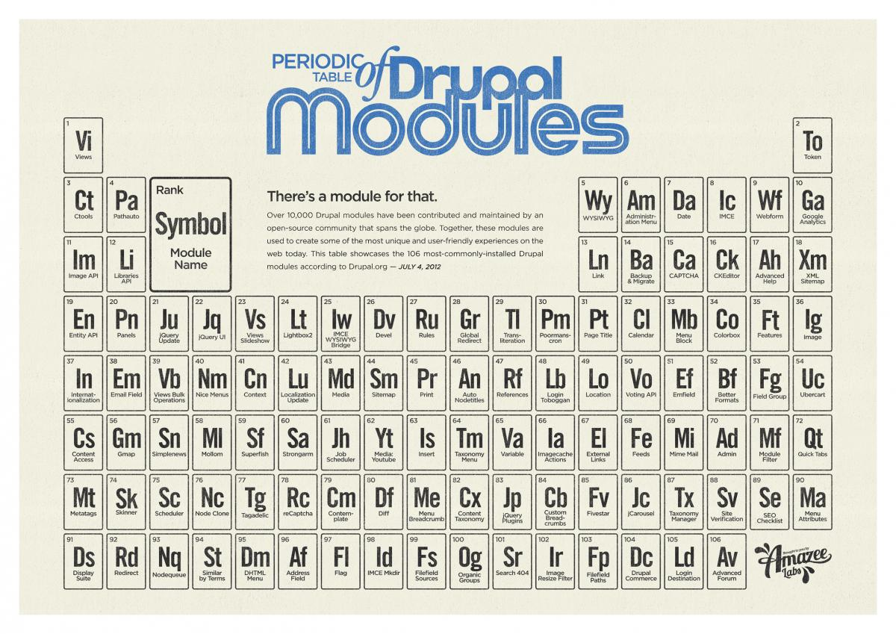
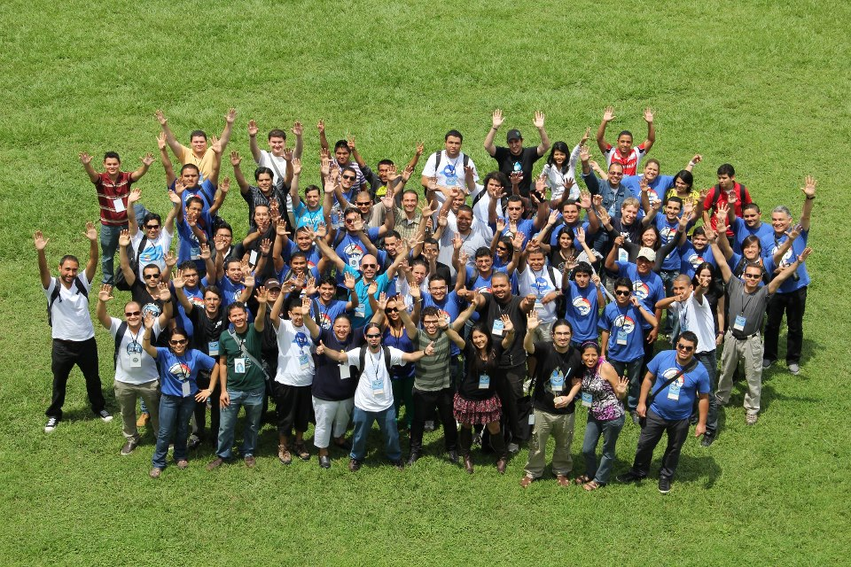

Drupal & Mobile Apps
Drupal como plataforma para móviles

Manuel
Drupaleto y Linuxero :D
- Softlite Solutions / @softlitem/ Drupal ID: manueler
¿Que es Drupal?
- Es un sistema de gestión de contenido(CMS) modular multipropósito y muy configurable
- Originalmente fue Escrito por: Dries Buytaert
- La caracteristica principal de Drupal es su Comunidad en todo el mundo
- Claro! es Software Libre \m/ protegido por Licencia GPLv2/GPLv3
Módulos
Comunidad
La caracteristica principal de drupal es su cominidad que esta en constante crecimiento Explicación del entorno
Press ESC to enter the slide overview. Hold down alt and click on any element to zoom in on it using zoom.js. Alt + click anywhere to zoom back out.
Drupal Services
Es una solución estandarizada para la integración de aplicaciones externas con Drupal. Las Devoluciones de llamada de servicio pueden ser utilizados con múltiples interfaces como REST, XMLRPC, JSON, JSON-RPC, SOAP, AMF, etc.REST
REpresentational State Transfer (REST) es un estilo de arquitectura de software para sistemas distribuidos como la World Wide Web. REST se ha convertido en un modelo de diseño predominante de servicios Web.Resource
- GET
- PUT
- POST
- DELETE
XML-RPC
XML-RPC es un protocolo de llamada a procedimiento remoto que usa XML para codificar los datos y HTTP como protocolo de transmisión de mensajes. Remote Procedure Call(RPC), una técnica para la comunicación entre procesos en una o más computadoras conectadas a una red.Ejemplo:
<?xml version="1.0"?>
<methodCall>
<methodName>org.wikipedia.intercambioDatos</methodName>
<params>
<param>
<value><i4>360</i4></value>
</param>
<param>
<value><i4>221</i4></value>
</param>
</params>
</methodCall>
JSON
Es acrónimo de JavaScript Object Notation(JSON), es un formato ligero para el intercambio de datos. JSON es un subconjunto de la notación literal de objetos de JavaScript que no requiere el uso de XML.Ejemplo:
{"menu": {
"id": "file",
"value": "File",
"popup": {
"menuitem": [
{"value": "New", "onclick": "CreateNewDoc()"},
{"value": "Open", "onclick": "OpenDoc()"},
{"value": "Close", "onclick": "CloseDoc()"}
]
}
}}
<menu id="file" value="File">
<popup>
<menuitem value="New" onclick="CreateNewDoc()" />
<menuitem value="Open" onclick="OpenDoc()" />
<menuitem value="Close" onclick="CloseDoc()" />
</popup>
</menu>
JSON-RPC
JSON-RPCes un protocolo de llamada a procedimiento remoto codificado en JSON. Es un protocolo muy simple (y muy similar a XML-RPC), que define sólo algunos tipos de datos y comandos.Ejemplo:
--> {"jsonrpc": "2.0", "method": "subtract", "params": [42, 23], "id": 1}
<-- {"jsonrpc": "2.0", "result": 19, "id": 1}
SOAP
SOAP (siglas de Simple Object Access Protocol) es un protocolo estándar que define cómo dos objetos en diferentes procesos pueden comunicarse por medio de intercambio de datos XML.Ejemplo:
<soap:Envelope xmlns:soap="http://schemas.xmlsoap.org/soap/envelope/">
<soap:Body>
<getProductDetails xmlns="http://warehouse.example.com/ws">
<productId>827635</productId>
</getProductDetails>
</soap:Body>
</soap:Envelope>
Ejemplo de Resources
Módulos con soporte de servicio
Fantastic Ordered List
- One is smaller than...
- Two is smaller than...
- Three!
Transition Styles
You can select from different transitions, like:
Cube -
Page -
Concave -
Zoom -
Linear -
None -
Default
Themes
Reveal.js comes with a few themes built in:
Sky -
Beige -
Simple -
Serif -
Default
* Theme demos are loaded after the presentation which leads to flicker. In production you should load your theme in the <head> using a <link>.
Global State
Set data-state="something" on a slide and "something"
will be added as a class to the document element when the slide is open. This lets you
apply broader style changes, like switching the background.
"blackout"
"soothe"
Custom Events
Additionally custom events can be triggered on a per slide basis by binding to the data-state name.
Reveal.addEventListener( 'customevent', function() {
console.log( '"customevent" has fired' );
} );
Clever Quotes
These guys come in two forms, inline:
The nice thing about standards is that there are so many to choose from
and block:
For years there has been a theory that millions of monkeys typing at random on millions of typewriters would reproduce the entire works of Shakespeare. The Internet has proven this theory to be untrue.
Pretty Code
function linkify( selector ) {
if( supports3DTransforms ) {
var nodes = document.querySelectorAll( selector );
for( var i = 0, len = nodes.length; i < len; i++ ) {
var node = nodes[i];
if( !node.className ) ) {
node.className += ' roll';
}
};
}
}
Courtesy of highlight.js.
Intergalactic Interconnections
You can link between slides internally, like this.
Fragmented Views
Hit the next arrow...
... to step through ...
any type- of view
- fragments
Fragment Styles
There's a few styles of fragments, like:
grow
shrink
roll-in
fade-out
highlight-red
highlight-green
highlight-blue
Spectacular image!

Export to PDF
Presentations can be exported to PDF, below is an example that's been uploaded to SlideShare.
Take a Moment
Press b or period on your keyboard to enter the 'paused' mode. This mode is helpful when you want to take disctracting slides off the screen during a presentation.
Stellar Links
It's free
reveal.js and rvl.io are entirely free but if you'd like to support the projects you can donate below. Donations will go towards hosting and domain costs.